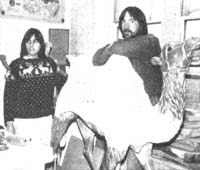

In celebration of folks involved in MOTHER-type doings around the world.
Many folks who frequent today's carnival carrousels will have Tracey and Stephen Cameron to thank for the pleasure of their rides, since the sister and brother partners have taken on the unusual challenge of restorting worn-out merry-go-round creatures.
A third-floor walk-up in downtown Hartford, Connecticut serves as the duo's office/workshop ... and there-amid a considerable clutter of antiquated animal figures in various sizes, shapes, and stages of restoration-the Camerons tackle both the business and the art of their trade. Tracey's duties include handling client negotiations, preparing repair sketches, and completing any decorative painting ... while it's Steve's job to do all hand carving and woodwork restoration.
The renovation process begins with Tracey's sketches of the end product. These guide Steve through his work ... using chisels, mallets, sandpaper, rasps, and fillers to repair and reconstruct the beast as needed. Then sealer, primer, and acrylic enamel are applied before Tracey does a careful airbrushing and affixes the last coat of enamel. And finally, the mended merry go-round mount-bedecked with handpainted bangles and other ornamental touches-is epoxy-hardened and delivered to the client.
The Camerons have yet to settle on a permanent name for their burgeoning business-they're known simply as "Tracey and her brother, the people who restore merry-go-round animals", but that hasn't kept their reputation from growing ... or the work from pouring in!-Steve Libby .
Eight years ago (shortly after he'd completed his Ph.D. thesis on the reproductive physiology of the red deer), John and Nichola Fletcher started Great Britain's first deer farm-dubbed Reedie hill-just outside of Auchtermuchty, Scotland.
Though deer meat has enjoyed only limited popularity in the past, the Fletchers contend that people's dislike of venison can largely be blamed on the tough, bitter quality of the meat that was-until recently-commonly available on the commercial market ... much of which was the product of older wild deer. With the advent of farmraised venison, on the other hand, a consistently high standard can be maintained.. John and Nichola butcher their stags when the animals are between the ages of 18 months and 2-1/2 years (hinds-adult females-are sold, at about $450 apiece, for breeding). Reediehill currently boasts 250 hinds, 6 stags, and some "growing stock".
There's a higher-than-world-average demand for deer ment among the European countries (West Germany alone purchases 80% of the venison produced in Scotland) ... in spite of the fact that the retail price of deer steaks runs as high as $7.00 per pound, with chops just under $5.00 and boned shoulder at about $3.75 a pound. But the Fletchers have added a lower-priced alternative to their line of fresh venison: homemade burgers, prepared from ground meat that John and Nichola mix with on ions, eggs, herbs, spices, and bread crumbs ... and sold in packages of four 4-ounce patties at about $3.00 per pound. People who are not in the habit of buying deer meat have been attracted to the food by Reediehill's burgers, and John and Nichola hope that those folks will enjoy the ready made patties enough to join the growing ranks of people who buy venison steaks, chops, etc.-TV.
One of the milestones of the early years of the solar era was Sun Day... a May 3, 1978 celebration coordinated by one of this country's leading proponents of conservation, Richard Munson. Some 20 million people in 31 nations participated in the event, which called worldwide attention to the potential of alternative energy. However-for Munson, at least-the promotion didn't stop there.
Anxious to make headway on the political front, Dick founded the, Solar Lobby (discussed in issue 68's Newsworthies column) ... the only national organization in the U.S. that lobbies exclusively for the transition to renewable resources. The 50,000 member public-interest group has helped gain tax credits and loans for individuals who use conservation measures and solar energy equipment . . . and has successfully pushed for loan programs to aid small businesses, as well as for product standards to protect consumers. The SL crew has also organized a Solar Political Action Committee, which supports Congressional candidates who advocate sun power ... and has launched prime-time TV commercials and sponsored a "radiothon" in efforts to increase the public's awareness of advances in alternative energy.
Under Dick's direction, the Solar Lobby publishes a bi-monthly newsletter called the Sun Times, which includes the latest information on solar products and technology, as well as a rundown of Sola r Lobby activities and other news in energy politics. If you'd like to participate in the SL political network, and/or subscribe to the Sun Times (a one-year membership/subscript ion is $15), write to Solar Lobby, Dept. TMEN, 1001 Connecticut Avenue N.W., Suite 510, Washington, D.C. 20036.-JV.
Just 30 minutes from downtown St. Louis, Missouri, construction has begun on a community of earth-sheltered condominiums. Developer DAVID FRANCOIS estimates that future owners of the houses will spend about 80% less on utility bills than they would if they were to live in conventional homes. The condominiums' concrete shells (which will incorporate post-tensioned steel cable) and moisture-resistant insulation will make the houses pretty, much earthquake-, tornado-, fire-, and waterproof. The structures will be built into the sides of a horseshoe-shaped valley, where they'll overlook three spring-fed lakes, and will be offered at a base rate of, approximately $44,000 per unit.
The 46th annual celebration of National Wildlife Week (sponsored by the National; Wildlife Federation) will be chaired by country music singer LORETTA LYNN. As spokeswoman for the March 20-26 event, which will carry the theme "This Is Your Land-Public Lands Belong to All of these", Ms. Lynn will ask that American citizens work to insure that our nation,, wilderness areas are managed wisely both today and in the future.
"We are building an internatio a network of alternative energy expertise says ERICH FARBER, the solar-power plane who launched the University of Florida's Training in Alternative Technologies pro gram in 1979. Farber-who's well known for his work in founding UF's Solar Energy and Energy Conversion Laboratory 25 years ago (see issue 24, page 59)-on heads a curriculum designed to teach representatives of developing countries a methods of energy conservation.-JV.
|
 PHOTO BY THE AUTHOR |
COURTESY OF SOLAR LOBBY |
|